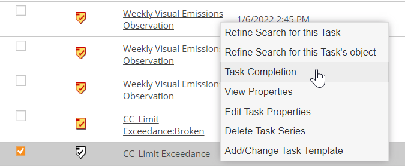

Once a task is completed, the only fields that can be edited are Comments, Hours to Complete and Cost to Complete.
When a task is associated with a non-numeric requirement or an event log, completing the task will create a data record for the requirement or the event object. If you have the appropriate permissions, you may edit the data for the event log or the requirement in order to modify the other information that was created by completing the task, including Complete Date, Compliance Status, Compliance Period, and Collector.
To edit a completed task:
Right click the task instance you want to edit and select Task Completion from the popup menu.
Use the search criteria Category = Complete with the appropriate dates to find completed tasks. To find an instance of a recurrent task, set both Start and End dates to include the due date of the specific task instance.

Or, from the task calendar, right-click the task icon and select View Completion from the popup menu.
For a task associated with more than one object, changes must be made in the Per-Object View.